How to optimise cost in Startup with Spot Instances?
JAWS DAYS 2016
발표자 소개
Minyoung Jeong(鄭敏泳)
CTO, The Beatpacking Company
Founder, AWSKRUG
AWS Community Hero
Love Python, Ruby
TBD
TBD
아마존웹서비스 한국사용자모임
AWSKRUG
Tokyo Region 설립 후, 한국에서도 AWS사용 관심이 증가하기 시작하여 2011년 11월 IRC에서 시작
2012년 2월 페이스북 그룹 시작 후, 2016년 3월 현재 약 6,700명이 활동 중
2015년 11월 Seoul Region 런칭으로 축제!
주요 활동
비정기 세미나
re:Invent reCap
연 3~4회의 회원 발표 세미나
스터디 지원
AWS에 관심이 높아 입문자가 많아요!
주로 입문 대상으로 스터디 모임 지원, AWS Credit등을 지원
DevDay
AWS Korea와 함께하는 기술 세미나
AWS 신제품 소개, Best Practice 소개 등
awskr.org
BEAT
Ad-Supported Radio
대한민국 최초
2014년 4월 Tokyo Region에서 런칭
600만 가입자, DAU 50만, MAU 140만
Series B
아쉽게도 아직 일본에서는 불가T_T
미리 하는 Q&A
왜 일본을 선택하였나?
AWS를 쓰고 싶었어요!
당시 한국은 Co-location 기반의 서비스가 대부분
API를 통한 자동화된 관리와 여러 서비스를 원했기 때문에 결정
미리 하는 Q&A
Tokyo Region에서 서비스 하는데 문제 없었나?
일반적으로, 한국<->일본 Latency는 50~80ms 정도
보통의 Mobile App에서 허용 가능한 Latency
좀 더 나은 사용자 경험을 위해, HTTP KeepAlive, GZip등 활용
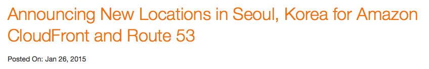
2015. 01. 26 CloudFront Edge Launch
Cloudfront 적극 활용
Static resouce외에도 필요시 API도 Cloudfront를 통해 제공
Cloudfront & S3를 통해 관리되는 Network으로 컨텐츠 전송

Cloudfront edge는 Seoul에 있지만 Route53 edge는 없음
CNAME 대신 ALIAS 활용
하지만....
일본은 유명 서비스들(Twitter, Facebook 등)의 한국 서비스 거점
인터넷 피크 시간(PM 10~AM 01)에 해저케이블 대역폭 이슈
다행히, AWSKR이 한국 ISP들과 협력하여 네트워크 경로 관리
2016년 현재, 상당히 준수하게 관리되는 중
미리 하는 Q&A
Seoul Region으로 옮길 계획?
아직 BEAT에서 필수적으로 쓰는 서비스 일부가 준비중
특히 Spot Instance가 부재
Tokyo와 병행하여 사용 예정
일부 API, Cache등의 이전 예정
ap-northeast-1 <-> ap-northeast-2간 네트워크 이슈
비트가 생각하는 AWS 이용의 원칙
적절한 규모의 자원을 이용한다.
필요한 만큼의 자원만 이용한다.
적절한 규모의 자원을 이용한다
EC2 Instance들의 가격폭은 800배
적절한 Instance Type을 선택하는 것이 매우 중요.
Class (t,m,c,g,r,i,d) 특성 차이
웹서버와, Cache 서버, DB서버에 적절한 인스턴스가 다름
가급적 항상 최신 세대를 사용하는게 가격:성능에 유리
단, C3/C4, M3/M4의 경우 한가지 추가 고려 사항
Instance-Storage vs EBS
C/M의 경우 3세대까지는 Instance-Storage가
제공되지만,
4세대 부터는 EBS만 제공됨
3세대에 제공되는 Instance-Storage는 1~2개의 SSD
Instance-Storage는 EBS 대비 7~10배의 성능 우수
영속성이 없는 대신 성능과 비용이 우수
복제등으로 보완할 수 있는 경우,
I/O 성능이 중요하다면 3세대 사용 고려
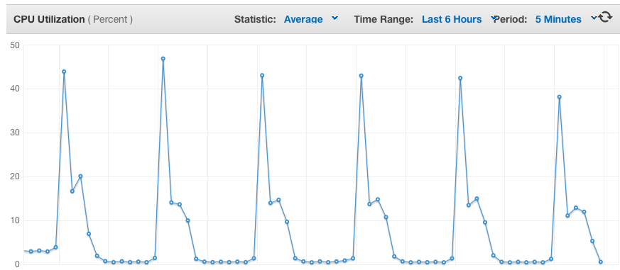
T2 Instance
Burst가 없거나, 혹은 예측가능하게 있는 서비스에 적용
CloudWatch등을 통한 CPU 사용률의 관측으로 적절한 T2 Instance로 전환시, 2~30%수준의 비용 절감 가능
특히 M3/M4 Instance에 대해 중점 검토
Lambda
Image Resize, Encoding 같은 작업은 Instance가 항상 대기할 필요가 없는 작업
Lambda는 100ms 단위로 과금하기 때문에 필요시에만 운영하여 비용 대폭 감소
필요한 만큼의 자원만 이용한다
AutoScale + Spot Instance
EC2 비용 감소의 핵심Spot Instance
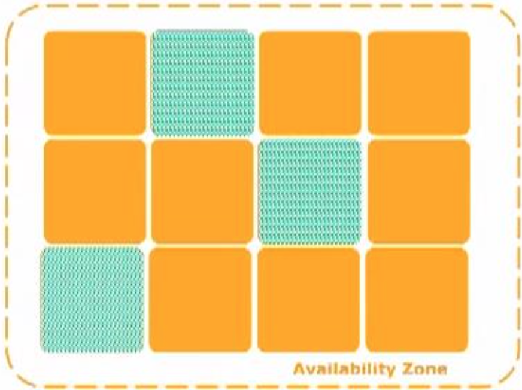
EC2의 유휴 자원을 Availability Zone 별로 경매를 통해 이용
경매를 통해 이용하기 때문에,
Instance 생명 주기를
임의로 통제할 수 없음
단, On-Demand 대비 최대 90% 정도까지 저렴하게 이용
입찰(Bid) 전략
어떻게 입찰해야 가장 효율적인가?
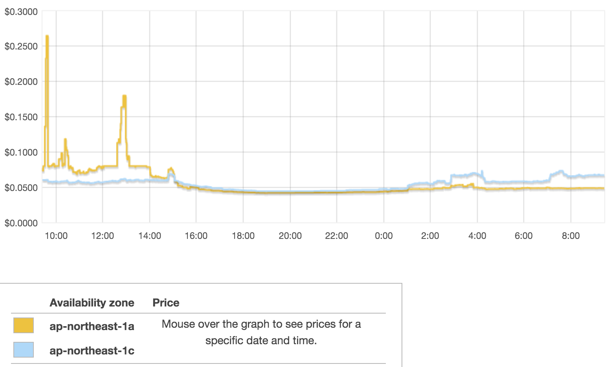
Availability Zone마다 가격이 다르다
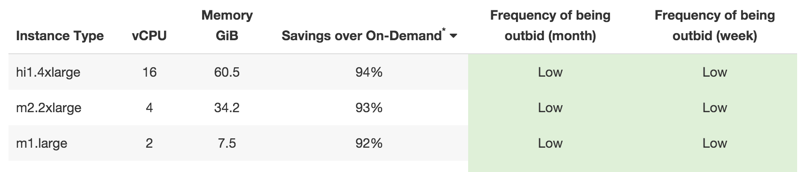
Instance Type마다 가격이 다르다
특히, ap-northeast-1에서 어떻게 입찰해야 할까?
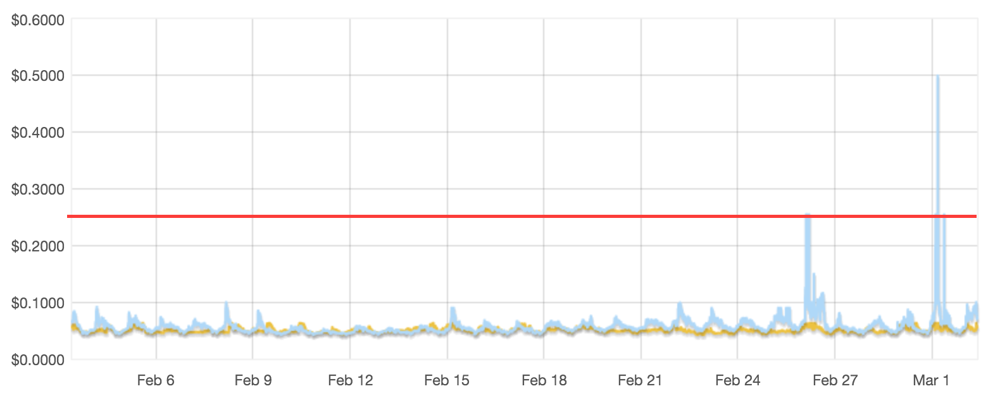
특정 Spike를 제외하면 On-Demand 보다 가격이 낮게 유지
BEAT에서는, On-Demand 가격의 100%로 입찰
입찰가는 최고 가격이므로, 해당 시점의 최저가에 낙찰
발표하기 두렵지만...(^^)
사실 Tokyo에서 Spot Instance는 경쟁이 치열하지 않은 편
활용의 폭이 현재까진 매우 넓음
Spot이 없으면?
경매 가격이 너무 높거나, 유휴 자원이 없는 경
Spot Instance를 확보하지 못하게 된다.
안정적인 서비스 운영을 위해서 이럴 경우 어떻게 해야 할까?
AutoScale + Spot Instance
하나의 ELB에 2개의 Autoscale group을 운영
각 On-Demand(RI)와 Spot Instance로 설정된 그룹
CPU혹은 Latency를 기준으로 Scale In/Out
On-Demand Group은 빠르게 Scale-In, 늦게 Scale-Out
Spot Group은 빠르게 Scale-Out, 늦게 Scale-In
CPU 기준
| Scale-In | Scale-Out | |
|---|---|---|
| Spot | 20%/1hr | 40%/5min |
| On-Demand | 40%/10min | 80%/5min |
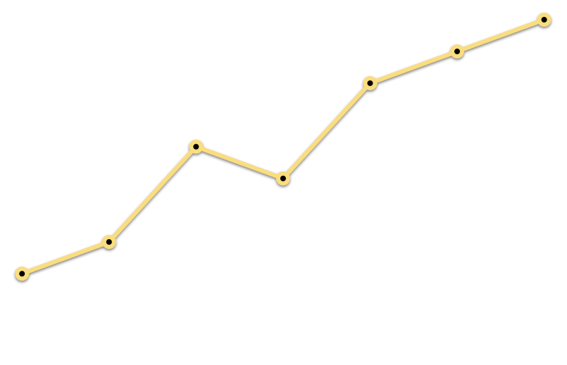
시간대별 Traffic
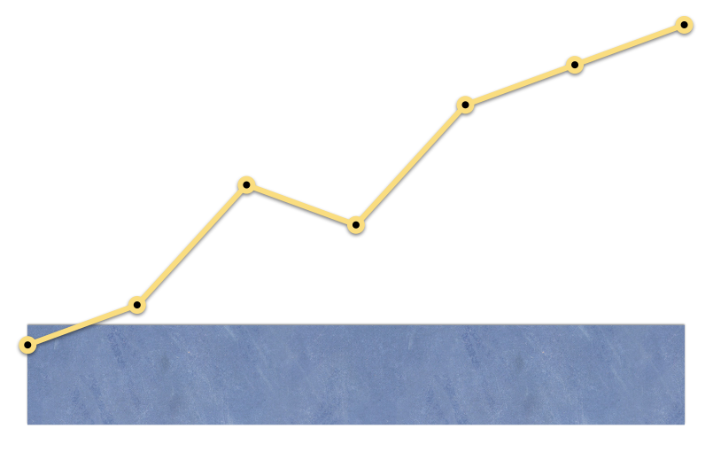
Traffic 최저점 대비 5~10% 정도를 On-Deamnd
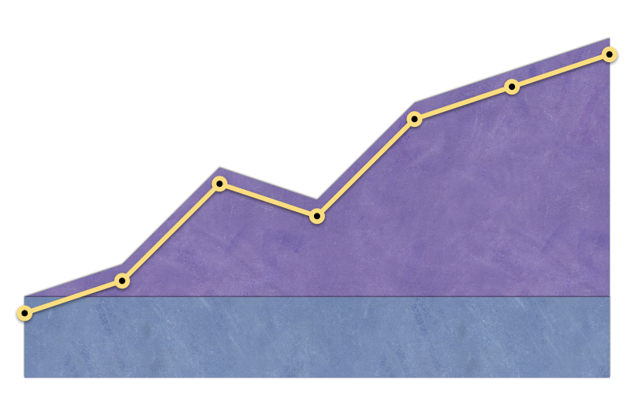
나머지 부분을 5~10% 정도 여유로 Spot Instance
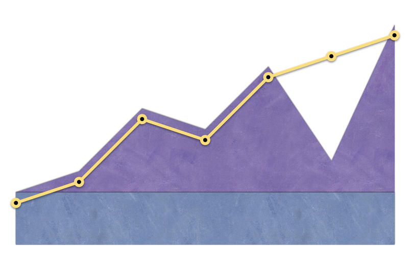
만약 원하는 만큼 Spot Instance 확보가 안된경우
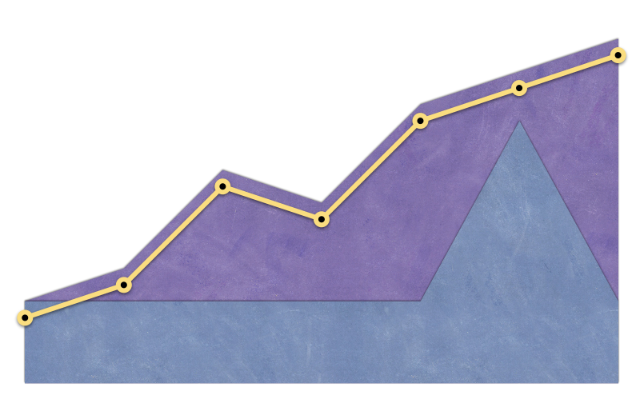
Scaling Policy에 의해 On-Deamnd가 Scale-Out
Scheduled Policy
서비스 Traffic pattern에 따라,
시간대 별로 시간대 별로 Minimum을 조정
Peak 시간대 Spot: 40~ On-Deamdn: 10~
Off 시간대 Spot: 10~ On-Deamnd: 2~
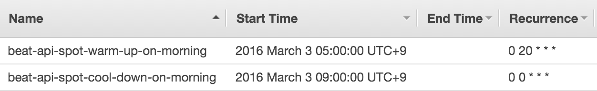
혹은, 매일 Peak 시작전에 사전 Warm-Up에 이용
Wrap Up
- 적절한 Instance Type을 사용
- 같은 EC2 사용에서도 성능:비용을 고려
- AutoScaling을 통한 적극적인 Spot-Instance 사용
ありがとうございます!
- Q&A
- AWSKRUG
- kkungkkung @ gmail.com